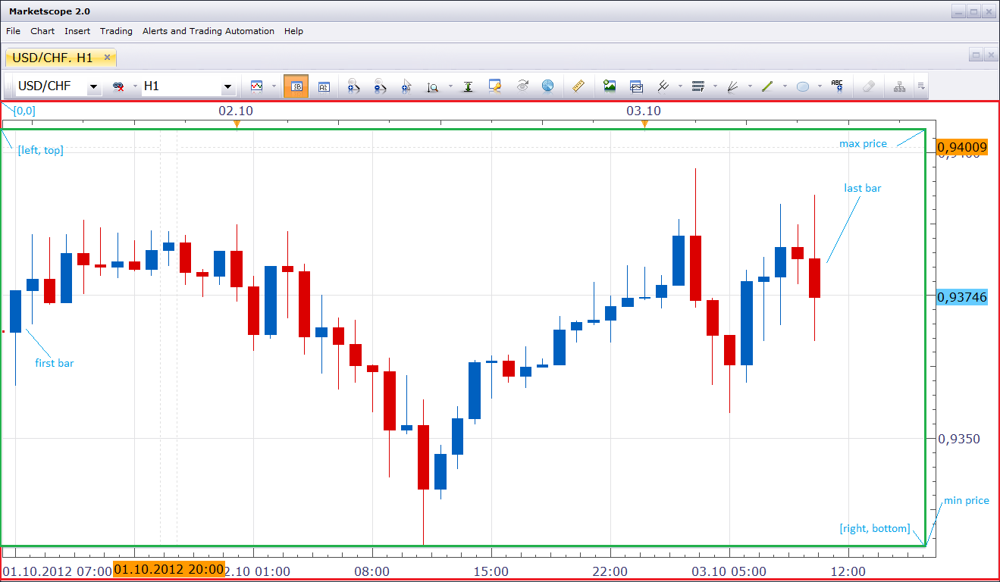
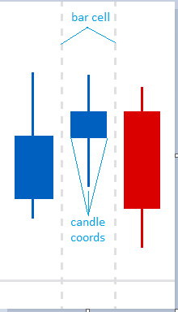
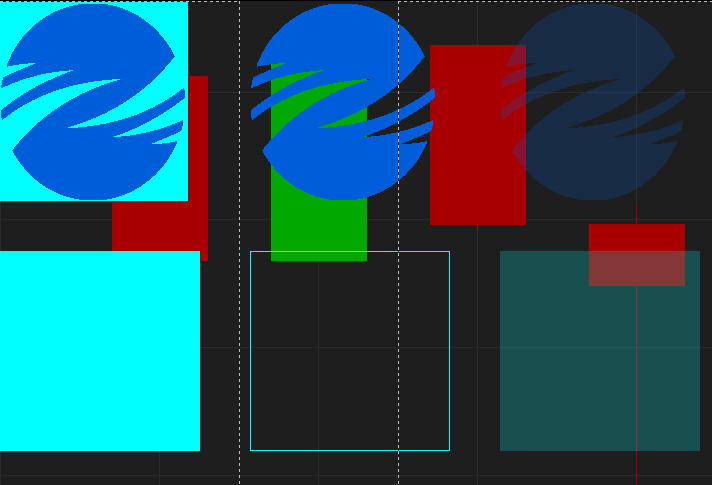
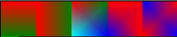

Canvas
The context table provides access to the drawing canvas. The canvas is a graphic surface at which
the chart and its surrounding is drawn. The canvas positions are referred by pixel coordinates. The top-left corner of the canvas
has coordinates 0, 0. The X axis extends to right, the Y axis extends to bottom. The chart area itself is a part of the whole canvas.
You can get the coordinates of the chart area using the top(), left(),
bottom() and right() methods of the context.
The chart itself is usually referred in bar index and price coordinates. The bar axis also extends left to right as X coordinate of the canvas.
The price coordinate extends bottom to up, in opposite direction to Y coordinate of the canvas. To convert canvas coordinates into chart axis
coordinates and back use the indexOfBar(), positionOfBar(),
priceOfPoint() and pointOfPrice() methods of the context.
The ranges of the chart axis can be obtained using the firstBar(), lastBar(),
minPrice(), and maxPrice() methods of the context.
As you know from older tools provided by Indicore SDK to draw shapes, there is another way of defining the coordinates and sizes of the object -
points. A point is a polygraph measure which is equal to 1/72 of an inch. To convert points into pixels and back you can use
pointsToPixels() and pixelsToPoints() methods of the context.

Bar cell
The bar at chart is not a pixel, but a cell. Every bar cell on the chart has the same width. The candle (or bar) does not use the whole cell, there is a gap between candle border and the cell borders.
So bar cell has five coordinates (see the nextBar() method of the context) - the
left and right coordinates of the cell itself, the middle coordinate of the candle and the left and right coordinates of the candle.

Drawing Shapes
The context table allows you to draw different shapes - lines, rectangles,
ellipses (or circles, because a circle is an ellipse bounded by a square),
arcs, polygons, and polylines.
To draw a shape you can use tools. A pen is used to draw the shape outline and defines width, color and style
of the outline and a solid or hatched brush is used to fill the
shape interior. These tools are called GDI objects (GDI stands for graphic device interface of Windows). You are allowed to have up to 64 tools
per an instance of the indicator. The limitation is introduced because the total number of GDI objects in the operating system is strictly limited
and is this limit is exhausted, the system can get into unstable state.
Once created the tool exists until another tool with the same number is created, or a tool is deleted, or the indicator instance is removed from the
chart.
The tools are referred by the index, a number between 0 and 63. There is no different numeration for pens, brushes and other tools. For example, if you created a pen with index 1 and then created a brush with index 1, the previously created pen will be destroyed.
The tool destruction does not affect anything already drawn using this tool. So, you can use unlimited number of the objects, you just cannot have more than 64 of them at the time.
Other Objects
In addition to the shapes, you can use the following operations to draw your chart:
- You can load and draw a picture (bmp, png or jpg file).
- You can load and draw an icon (ico file)
- You can draw a text using different fonts.
The images and fonts used for these operations are also GDI objects (drawing tools) and are managed in the same manner as brushes and pens.
Transparency
There are two way of using of the transparency of the objects.
1) Shapes can use -1 instead of the index of the brush to use a hollow (transparent) brush to fill the shape.
2) Images can be drawn with using one of the colors as a transparent color.
3) And, finally, all shapes and objects can be drawn with partial transparency.
See examples of the transparency at the image below. Left to right, the first row: a picture drawn without transparency, a picture drawn with using light cyan (rgb(0, 255, 255)) as a transparent color, a picture drawn with a transparent color and 80% transparency. Left to right, the second row: a shape drawn using a solid brush, a shape drawn using a hollow brush, a shape drawn using a solid brush and 80% transparency.

Gradients
The context is able to perform very complex operation of gradient drawing. It can a gradient-filled rectangle
which has different colors for all four corners. Using this function you can create almost any gradient you may need.
See examples of the gradient fills. Left to right, corners are listed from top-left, clockwise:
1) red, red, green, green (vertical gradient)
2) red, green, green, red (horizontal gradient)
3) red, green, blue, cyan
4) red, red, red, blue
5) blue, red, blue, red
